Competitor Overview
竞品半拉链表现总览
（按内搭整体规模排序）

IN-DEPTH PIPELINE REPORT
（按内搭整体规模排序）
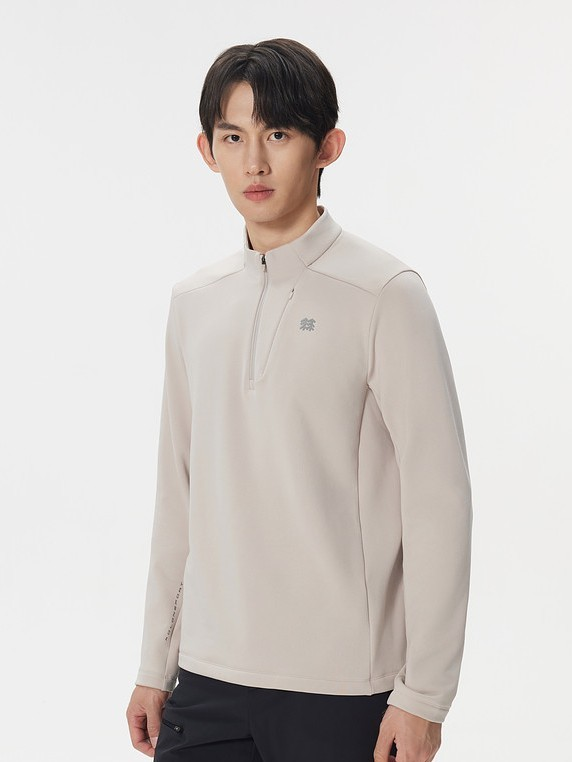
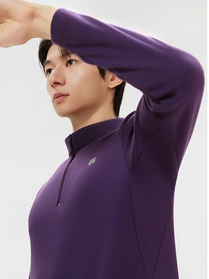
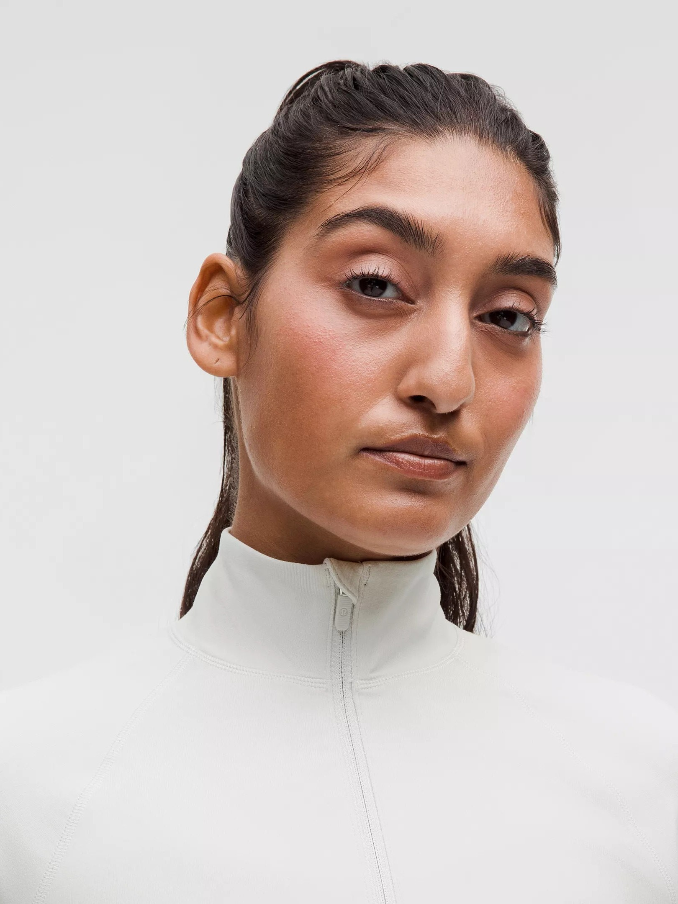
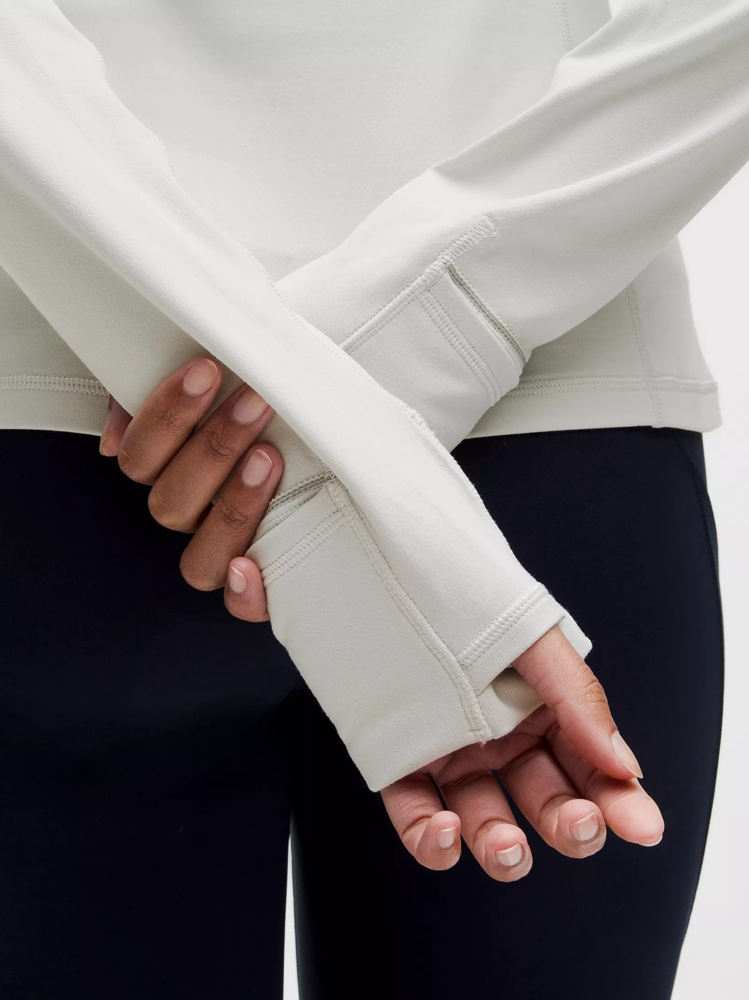
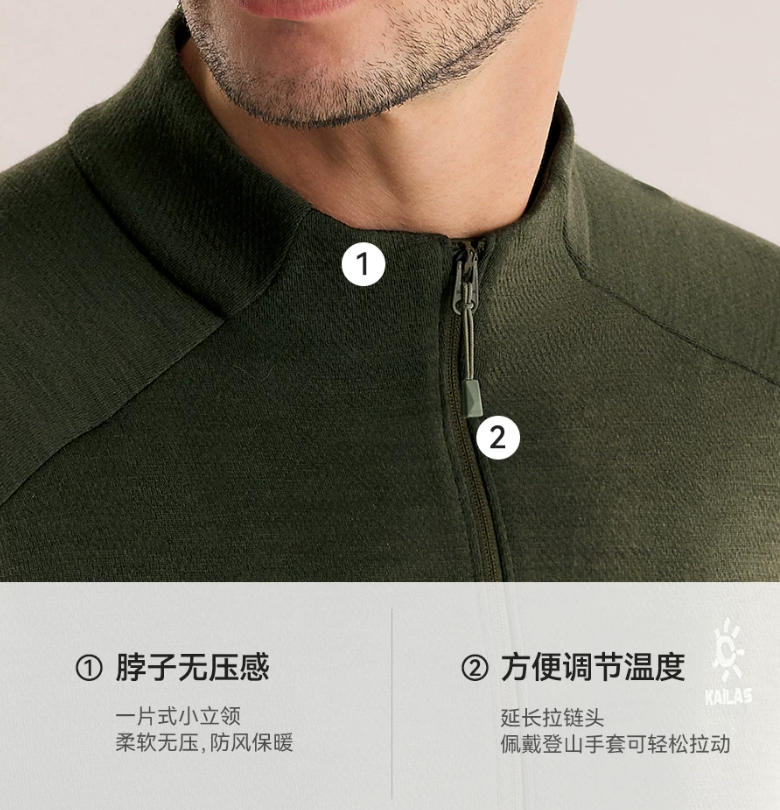
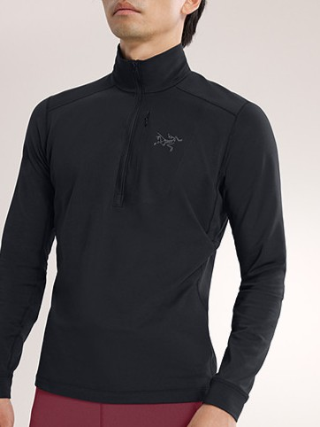
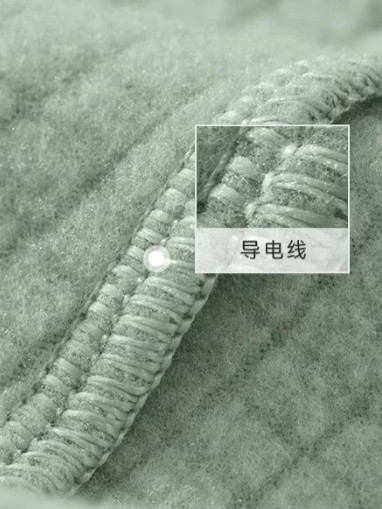
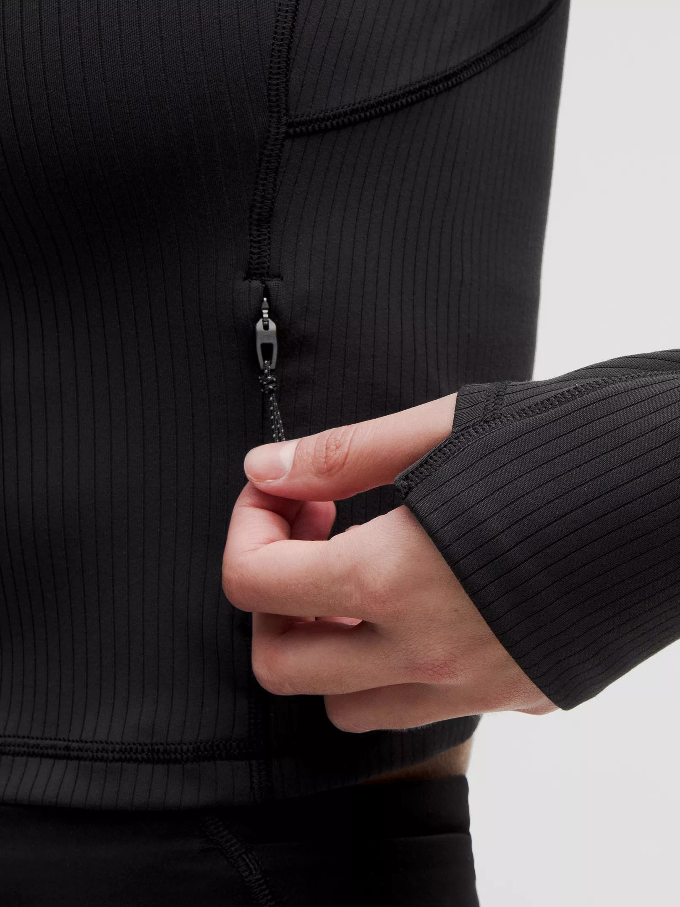
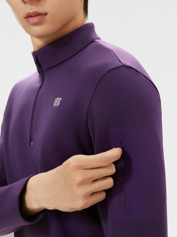
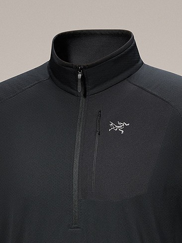
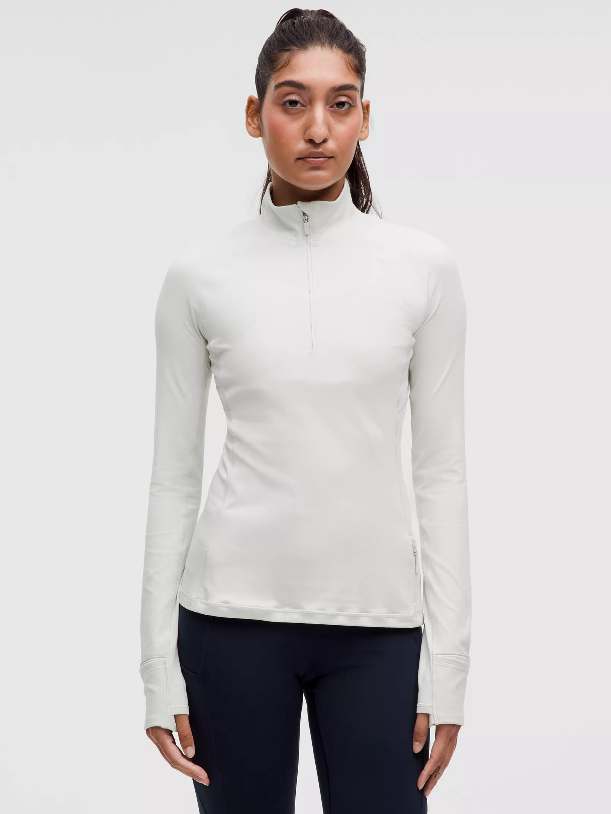
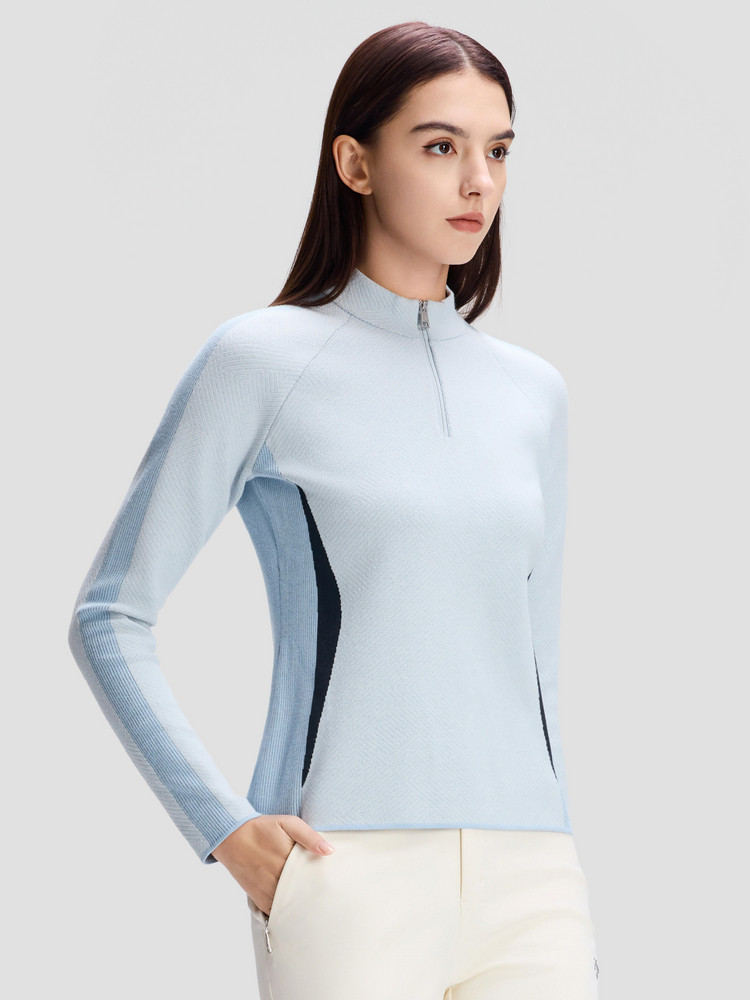
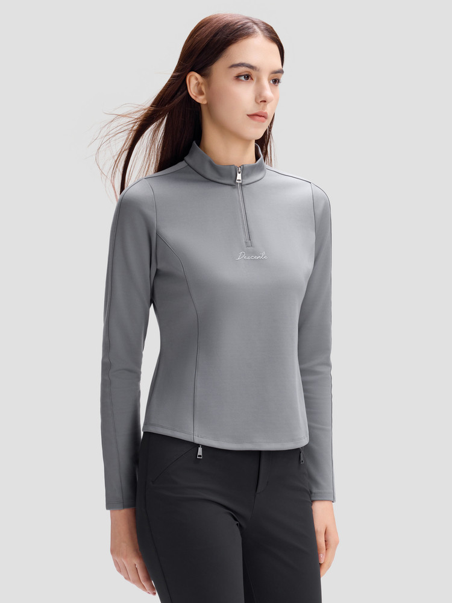
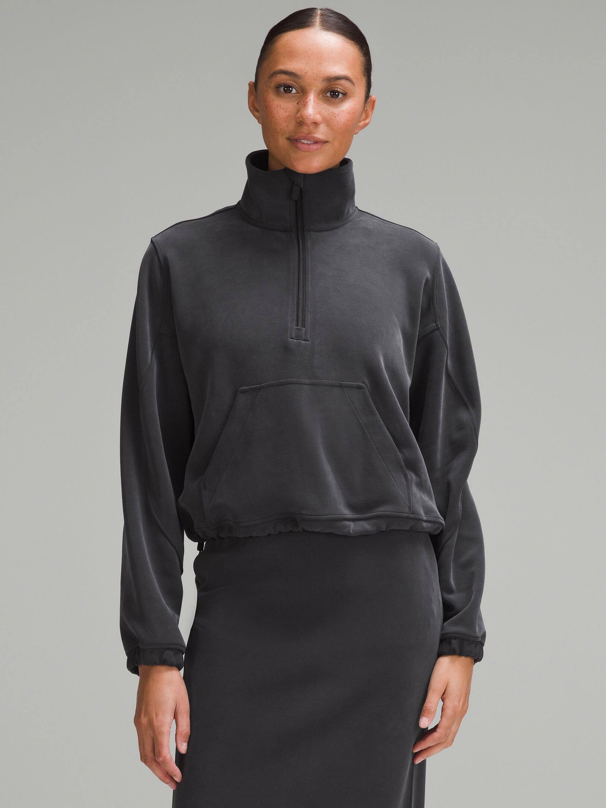
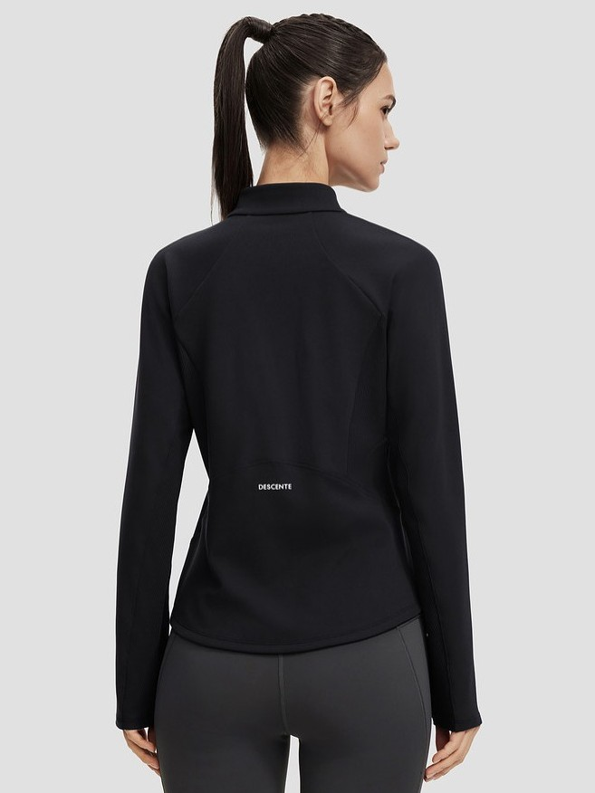
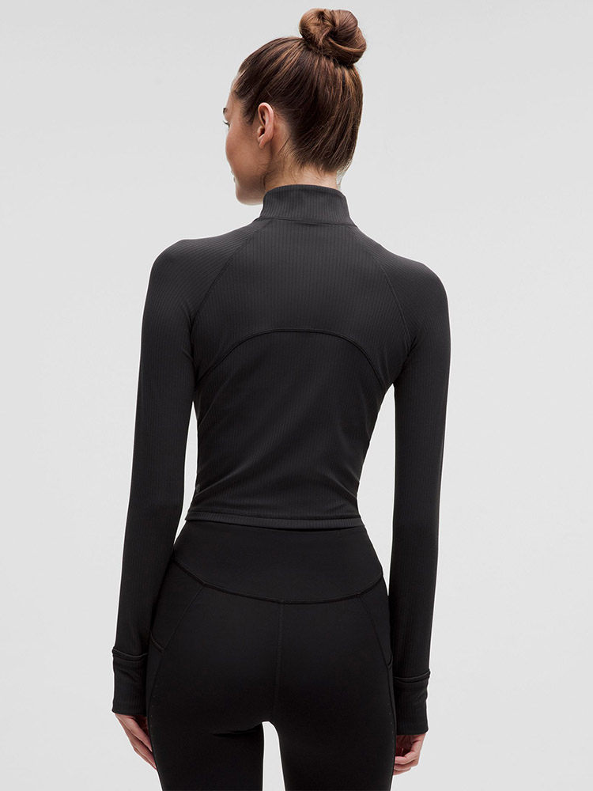
| 维度 | ARC'TERYX | KAILAS | KOLON | DESCENTE | LULULEMON |
|---|---|---|---|---|---|
|
规模与增长
Scale & Growth
|
高价高势能 后续接入布局深度、YoY 与 ASP 数据 |
主盘稳定扩张 后续接入布局深度、YoY 与 ASP 数据 |
规模基础较稳 后续接入布局深度、YoY 与 ASP 数据 |
增长效率突出 后续接入布局深度、YoY 与 ASP 数据 |
增长弹性最强 后续接入布局深度、YoY 与 ASP 数据 |
|
性别结构
Gender Split
|
女款释放明显 后续接入女/男占比与增速判断 |
男盘承接为主 后续接入女/男占比与增速判断 |
男盘更稳女款提速 后续接入女/男占比与增速判断 |
双性别共同支撑 后续接入女/男占比与增速判断 |
女性机会最清晰 后续接入女/男占比与增速判断 |
|
版型廓形
Fit & Silhouette
|
修身常规集中 后续接入主导版型与增长版型 |
运动合体更强 后续接入主导版型与增长版型 |
从修身向合体迁移 后续接入主导版型与增长版型 |
运动版型最鲜明 后续接入主导版型与增长版型 |
女性短款更活跃 后续接入主导版型与增长版型 |
|
功能组合
Function Mix
|
保暖与防护并行 后续接入 Top Function 组合 |
复合功能渗透更高 后续接入 Top Function 组合 |
弹力速干为主轴 后续接入 Top Function 组合 |
性能双核更稳定 后续接入 Top Function 组合 |
舒适功能最集中 后续接入 Top Function 组合 |
|
面料与保暖结构
Fabric & Warmth
|
结构向轻量层转移 后续接入面料雷达结论 |
加绒保暖盘更清晰 后续接入面料雷达结论 |
双结构重组明显 后续接入面料雷达结论 |
非加绒训练层主导 后续接入面料雷达结论 |
结构分散更贴身 后续接入面料雷达结论 |
|
颜色表现
Color Read
|
男
女
男：黑蓝灰主导。女：黑灰中加入冷浅紫。
|
男
女
男：深色户外自然色。女：浅色与雾紫更活跃。
|
男
女
男：卡其橄榄更稳定。女：中性色里加入浅蓝。
|
男
女
男：深色性能感更强。女：蓝白黑更偏冷感。
|
男
女
男：深色杂灰更稳。女：奶油粉棕更鲜明。
|
以常规/运动版型和核心功能承接主盘，用功能与细节升级实现稳定增长。
基础细节：结构化剪裁, 拇指洞, 拉链护嘴等。高端升级方向：肩线偏移, 反光细节, 热压口袋等。
以精细化版型和核心功能放大增量，用女性化设计与功能强化建立更清晰的开发方向。
女性化剪裁, 弧形下摆, 弧形分割线, 下摆抽绳等细节修饰身形。